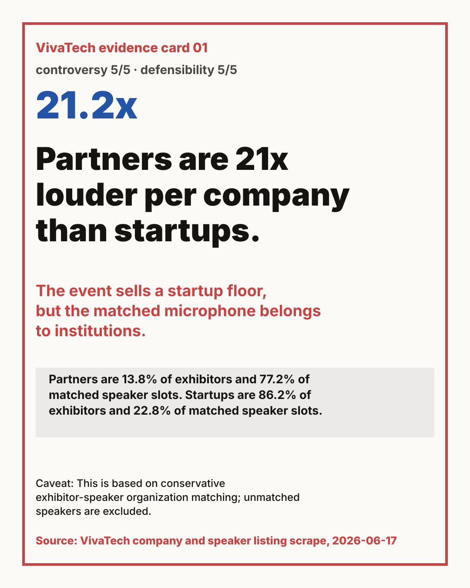
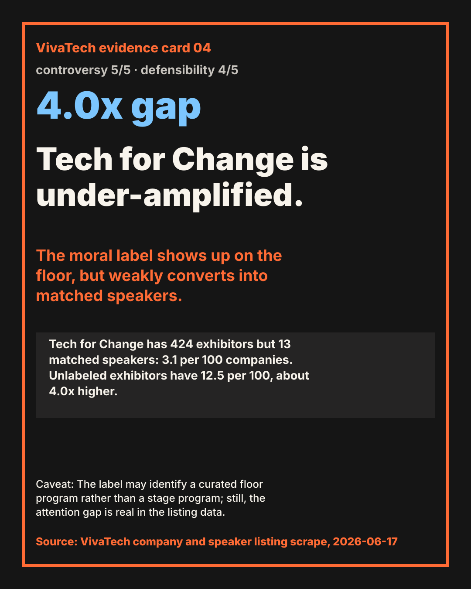
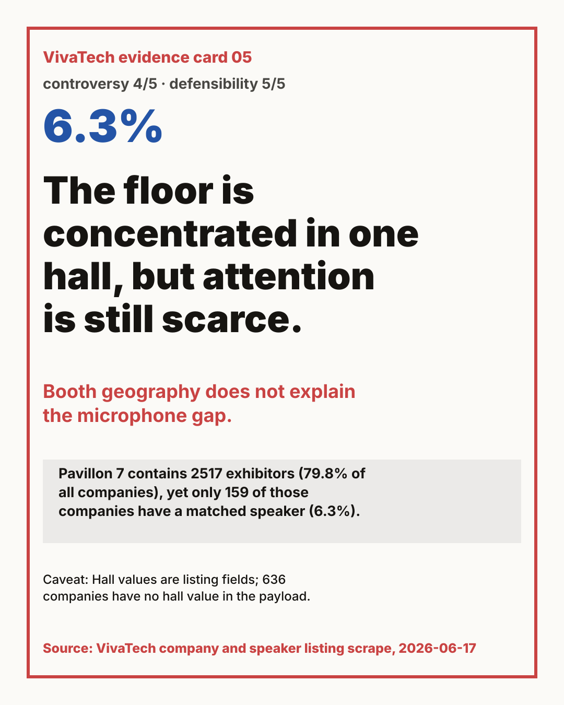
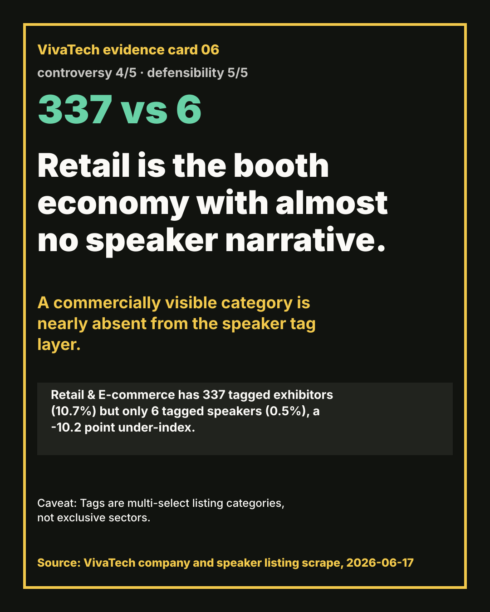
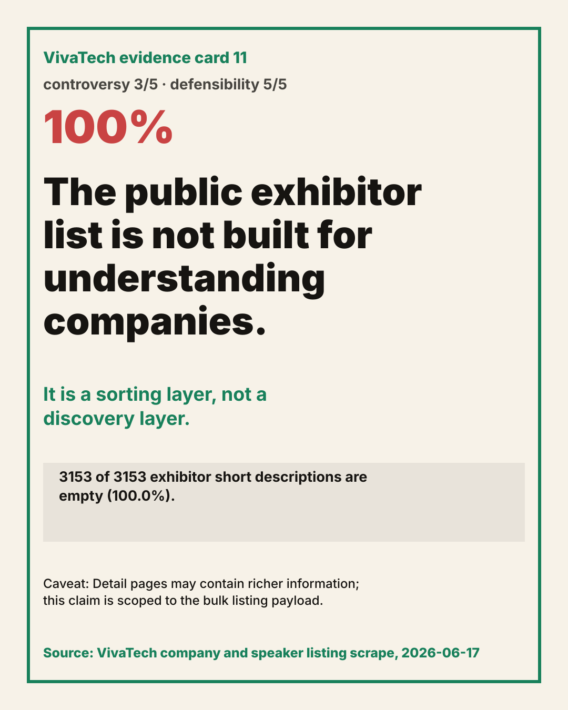

VivaTech's viral story is not AI. It is who gets the microphone.
These are social-ready, sharp-but-defensible claim cards. Each claim uses the public company and speaker listing scrape, and each includes the caveat needed to avoid overclaiming.

Card 01
Partners are 21x louder per company than startups.
The event sells a startup floor, but the matched microphone belongs to institutions.
Evidence: Partners are 13.8% of exhibitors and 77.2% of matched speaker slots. Startups are 86.2% of exhibitors and 22.8% of matched speaker slots.
Caveat: This is based on conservative exhibitor-speaker organization matching; unmatched speakers are excluded.

Card 02
Top billing almost erases startups.
Only one top-billed matched speaker maps to a startup exhibitor.
Evidence: Among 20 top-billed speakers that matched exhibitors, 19 map to partners and 1 maps to a startup. Per exhibitor, partner top-billing density is 119.0x startup density.
Caveat: This only counts top speakers that match exhibitor organizations; celebrity and government speakers often do not match exhibitors.

Card 03
Top speakers are twice as likely to be tagless.
The highest-status speaker layer is less classified by topic than ordinary speakers.
Evidence: 57.4% of top speakers have no speaker tags, compared with 27.8% of non-top speakers.
Caveat: A missing tag is a listing-data signal, not proof that the speaker lacks a topic.

Card 04
Tech for Change is under-amplified.
The moral label shows up on the floor, but weakly converts into matched speakers.
Evidence: Tech for Change has 424 exhibitors but 13 matched speakers: 3.1 per 100 companies. Unlabeled exhibitors have 12.5 per 100, about 4.0x higher.
Caveat: The label may identify a curated floor program rather than a stage program; still, the attention gap is real in the listing data.

Card 05
The floor is concentrated in one hall, but attention is still scarce.
Booth geography does not explain the microphone gap.
Evidence: Pavillon 7 contains 2517 exhibitors (79.8% of all companies), yet only 159 of those companies have a matched speaker (6.3%).
Caveat: Hall values are listing fields; 636 companies have no hall value in the payload.

Card 06
Retail is the booth economy with almost no speaker narrative.
A commercially visible category is nearly absent from the speaker tag layer.
Evidence: Retail & E-commerce has 337 tagged exhibitors (10.7%) but only 6 tagged speakers (0.5%), a -10.2 point under-index.
Caveat: Tags are multi-select listing categories, not exclusive sectors.

Card 07
AI is not the story. AI is the wallpaper.
When nearly half the event is tagged AI, the sharper story is who gets amplified inside AI.
Evidence: AI/Robotics appears on 1513 exhibitors (48.0%) and 528 speakers (46.6%).
Caveat: The AI tag measures listing taxonomy, not product quality or real AI depth.

Card 08
The US punches far above its booth count.
Booths and agenda leverage tell different geopolitical stories.
Evidence: The US has 73 exhibitors and 68 matched speakers (93.2 per 100 companies). India has 88 exhibitors and 3 matched speakers (3.4 per 100).
Caveat: Country labels come from exhibitor records and need normalization before official rankings.

Card 09
Korea has booth mass but almost no matched microphone.
After fixing the split country label, Korea remains almost silent in matched speaker density.
Evidence: South Korea plus `korearepublicof` totals 153 exhibitor records but only 2 matched speakers, or 1.3 per 100 companies.
Caveat: This claim depends on normalizing the raw country split and may undercount unmatched speaker organizations.

Card 10
Funding maturity buys microphone odds.
The event celebrates early startups, but later-stage companies get much better matched speaker density.
Evidence: Series C exhibitors show 16.7 matched speakers per 100 companies, versus 2.1 for bootstrapped companies.
Caveat: Series C has only 24 companies, so this is a directional signal rather than a causal proof.

Card 11
The public exhibitor list is not built for understanding companies.
It is a sorting layer, not a discovery layer.
Evidence: 3153 of 3153 exhibitor short descriptions are empty (100.0%).
Caveat: Detail pages may contain richer information; this claim is scoped to the bulk listing payload.

Card 12
The same normalized company names repeat across the floor.
Even before external enrichment, identity resolution is a real analytical problem.
Evidence: 40 normalized company names appear more than once; examples include alice bob and h.
Caveat: Some repeats are legitimate multi-booth or naming collisions; do not dedupe without manual review.